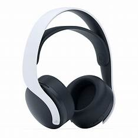
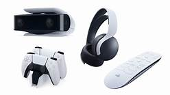

Accessories
Duelsense Edge controller
The DualSense Edge is Sony's first real take on a pro controller. It has dabbled in attachments to add back buttons, sure, but this adds so much more. The DualSense Edge, adds a pair of mappable back paddles, swappable joysticks with alternate cap options, adjustable triggers, a long braided cable, a carrying case and more.

Ps5 Headset:
The Sony Pulse 3D Wireless headset is the official headset of the PS5, so comes with Sony's solid reputation for good build quality, all at a reasonable $99/£89. Add in compatibility with Sony's Tempest 3D Audio engine and you've got a rather impressive gaming headset.
Other Ps5 accessories:
The PS5 controller charger station features LED ambient light that indicates charge status behind a Marvel-style faceplate. The dock also comes with a 39-inch USB-C charging cable, allowing the dock to be powered via console or wall charger, and theres a whole lot more for the platstation 5 to customize.
